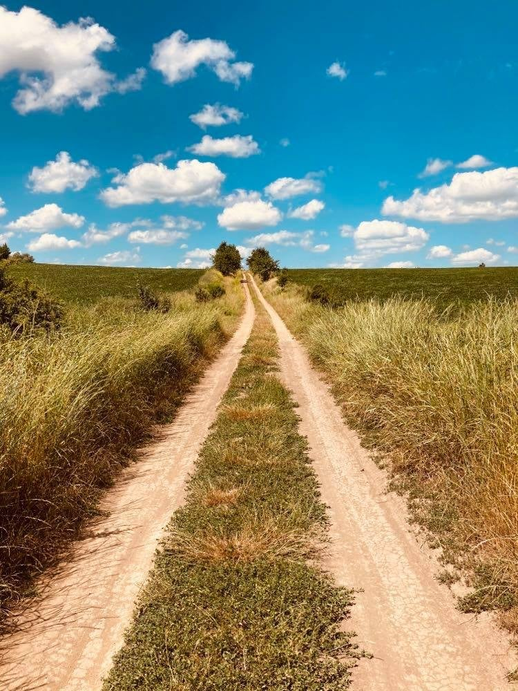

Introducing the route
Camino Podolico is a hiking trail that intertwines cultural,
historical and religious essence. It is interesting for all
segments of the population, Christians of all denominations
and non-believers. Pilgrimage became one of the foundations of
tourism and played almost the highest role. People walked
hundreds or even thousands of kilometers to the shrines,
learning new customs, territories and discovering the world.
Hiking was in the first place. And it is he who gives the
greatest opportunity to see and learn. It will be a rest not
for the body, but for the soul for all those who are morally
tired of everyday life, of constant problems at work and at
home. Our vacation is a unique opportunity to clear your mind,
find the right solutions and return to a completely new person
It is a 100 or 250-kilometer (at your choice) walking or
cycling tour of the picturesque places of Vinnytsia and
Khmelnytsky regions. The impressions you get along the way do
not compare with any vacation. You will discover Ukraine on
the other side, its beauty, nature, architecture and
hospitality. Discover yourself as a traveler, test your
strength and get incredible adrenaline.

Navigation
Our locations
Camino Podolico is the first official walking cultural route,
which provides the opportunity to spend the night at reasonable
distances (20-25 km) and is supported by local authorities. It
runs through the most interesting places of thirteen picturesque
settlements of Vinnytsia and Khmelnytsky regions, the key points
of which are:
- Vinnytsia
- Bar
- Kamianets-Podilskyi
In the future, the route is planned to continue to the border with Slovakia and join the international cultural and tourist route - the Way of St. James.
Our route runs along the most convenient picturesque trails and roads near the most famous monuments of culture, history and architecture of this part of Vinnytsia. It leads near rivers, reservoirs and healing springs, mills, through fields, forest belts, parks, near churches and monasteries and more.
Intermediate points of the route are:
- Gnivan
- Brailiv
- Zhmewrynka
- Severinivka
- Bar
- Yaltushkiv
- Vinkivtsi
- Zinkiv
- Maliivtsi
- Dunaivtsi
- Makiv
They put stamps or stickers in the passport of official pilgrims (tourists who register at the beginning of the trip).
- Vinnytsia
- Bar
- Kamianets-Podilskyi
In the future, the route is planned to continue to the border with Slovakia and join the international cultural and tourist route - the Way of St. James.
Our route runs along the most convenient picturesque trails and roads near the most famous monuments of culture, history and architecture of this part of Vinnytsia. It leads near rivers, reservoirs and healing springs, mills, through fields, forest belts, parks, near churches and monasteries and more.
Intermediate points of the route are:
- Gnivan
- Brailiv
- Zhmewrynka
- Severinivka
- Bar
- Yaltushkiv
- Vinkivtsi
- Zinkiv
- Maliivtsi
- Dunaivtsi
- Makiv
They put stamps or stickers in the passport of official pilgrims (tourists who register at the beginning of the trip).
Let's travel!
Are you afraid that you will not master? The way has already
been overcome by children, and the route passes though sparsely
populated places, but still there are people. If you wish, you
can take a short drive. In addition, in Ukraine, unlike in
Spain, you can set up tents, tie a hammock, light a fire and
spend the night quietly. Or stay in a hotel or green estate for
a day to rest if you are tired.
In each settlement, which are located 15-25 km along the way, there are places for accommodation and shops. You choose where it is better to spend the night: in a hotel, in a monastery or in a green estate. Each of these types of accommodation has its own character and special spirit. Of course, it is desirable to book places in hotels in advance, but in any case, you will not stay on the street, unless you have a tent. Have a good rest! Good Camino!
In each settlement, which are located 15-25 km along the way, there are places for accommodation and shops. You choose where it is better to spend the night: in a hotel, in a monastery or in a green estate. Each of these types of accommodation has its own character and special spirit. Of course, it is desirable to book places in hotels in advance, but in any case, you will not stay on the street, unless you have a tent. Have a good rest! Good Camino!